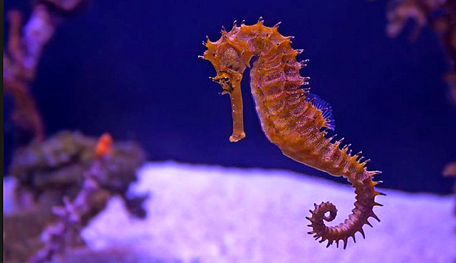

Os cavalos-marinhos caracterizam-se por terem uma cabeça alongada, com
filamentos que lembram a crina de um cavalo, e por exibirem mimetismo semelhante ao do camaleão, podendo mudar
de
cor e mexer os olhos independentemente um do outro. Nadam com o corpo na vertical, movimentando rapidamente as
suas barbatanas. Algumas espécies podem ser confundidas com plantas marinhas, corais ou anêmonas marinhas.
Geralmente medem entre 15 e 18 centímetros, mas podem medir desde 13 a 30 centímetros, dependendo da espécie,
com peso entre 50 e 100 gramas. Vivem em águas de regiões de clima temperado e tropical.
Os filhotes, quando nascem, são transparentes e medem menos de um centímetro, mas com variações, dependendo da espécie. Eles sobem logo à superfície para encherem suas bexigas natatórias de ar, para poderem se equilibrar na água ao nadarem. Após nascerem, já são totalmente independentes de seus pais, mesmo sendo frágeis. Um cavalos-marinhos macho geralmente gera 100 a 500 filhotes por gestação, dependendo da espécie. Geralmente, quase 97% dos filhotes de cavalos-marinhos são mortos por predadores naturais, que são, geralmente, peixes maiores.
Os cavalos-marinhos são encontrados principalmente em águas rasas tropicais e temperadas em todo o mundo, e preferem viver em áreas abrigadas, tais como leitos de algas marinhas, estuários, recifes de corais ou mangues. Nas águas do Pacífico, da América do Norte à América do Sul, há cerca de quatro espécies. No oceano Atlântico, o Hippocampus erectus varia de Nova Escócia para o Uruguai. Hippocampus zosterae, conhecido como o cavalo-marinho-anão, é encontrado nas Bahamas. Colônias foram encontrados nas águas europeias como o estuário do Tamisa. Três espécies vivem no mar Mediterrâneo: Hippocampus guttulatus (o cavalo-marinho-de-focinho-longo), o cavalo-marinho-de-focinho-curto e Hippocampus fuscus (o pônei-do-mar). Nessas áreas, os machos ficam dentro de 1 metro quadrado em seu território, enquanto fêmeas variam de cerca de cem vezes isso.